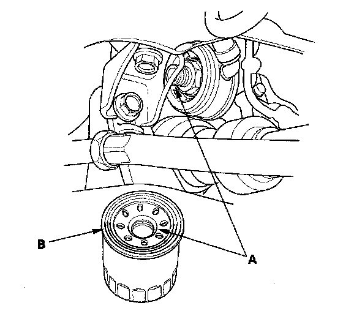
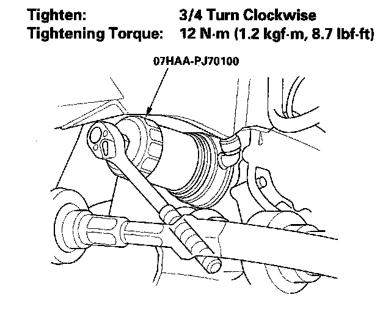
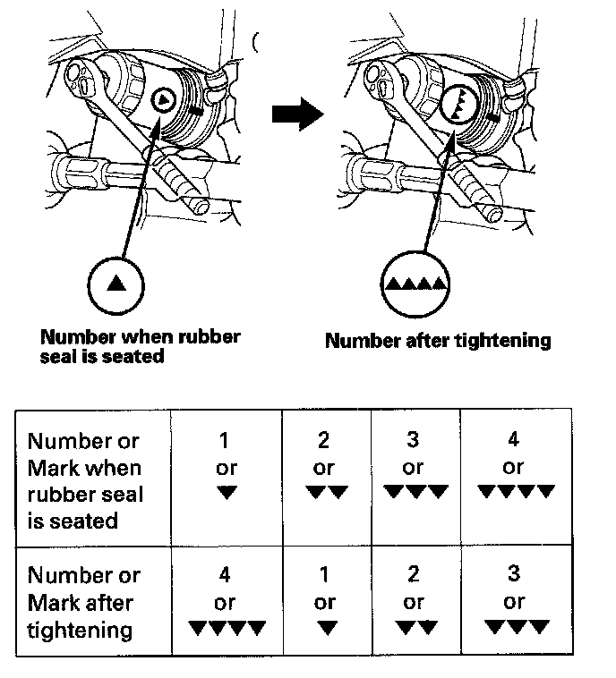

Oil Filter: Service and Repair
Engine Oil Filter ReplacementSpecial Tools Required
Oil filter wrench 07HAA-PJ70100
1. Remove the oil filter with the special oil filter wrench.
2. Inspect the filter to make sure the rubber seal is not stuck to the oil filter seating surface of the engine.
3. Inspect the threads (A) and rubber seal (B) on the new filter. Clean the seat on the oil cooler, then apply a light coat of new engine oil to the filter rubber seal. Use only filters with a built-in bypass system.

4. Install the oil filter by hand.
5. After the rubber seal seats, tighten the oil filter clockwise with the oil filter wrench.

6. If four numbers or marks (1 to 4 or "V" to "VVVV") are printed around the outside of the filter, use the following procedure to tighten the filter.
^ Spin the filter on until its seal lightly seats against the oil cooler, and note which number or mark is at the bottom.
^ Tighten the filter by turning it clockwise three numbers or marks from the one you noted. For example, if number 2 is at the bottom when the seal is seated, tighten the filter until the number 1 comes around the bottom.

7. After installation, fill the engine with oil up to the specified level, run the engine for more than 3 minutes, then check for oil leakage.